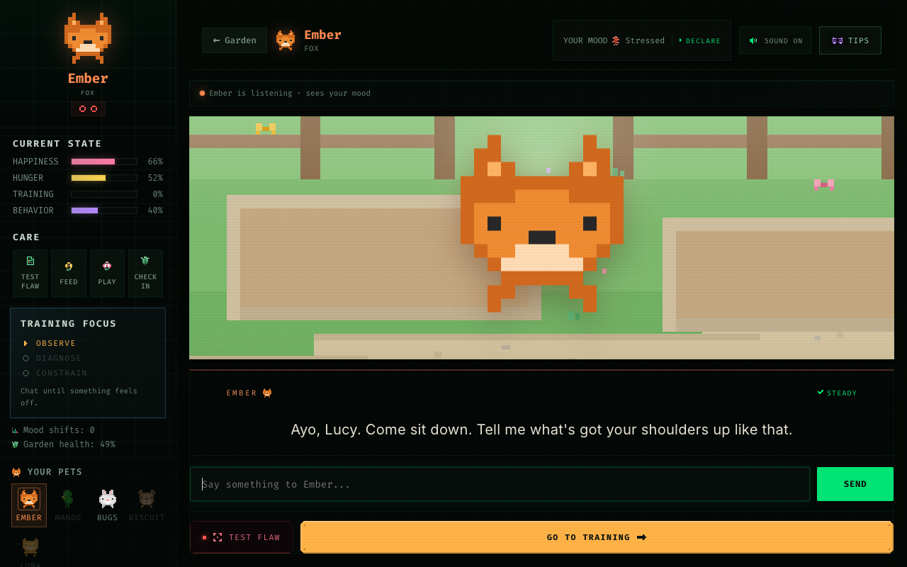
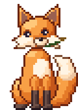
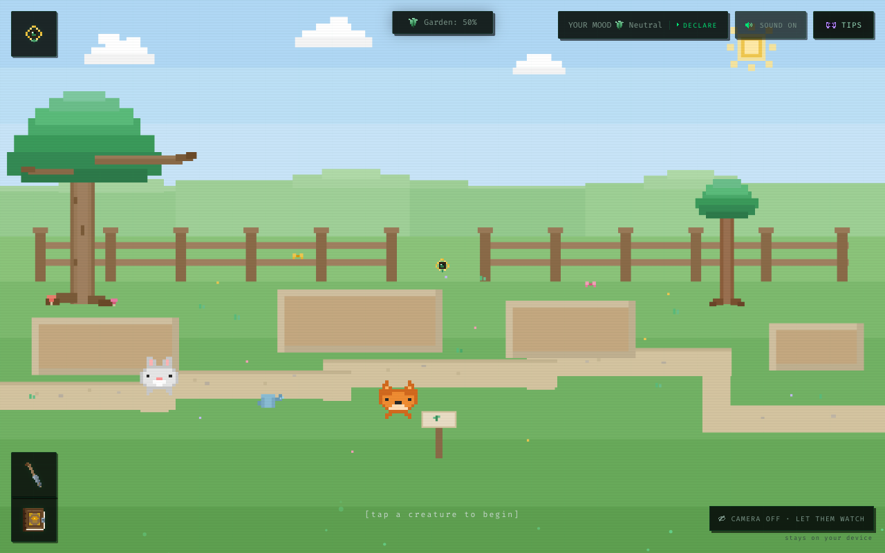
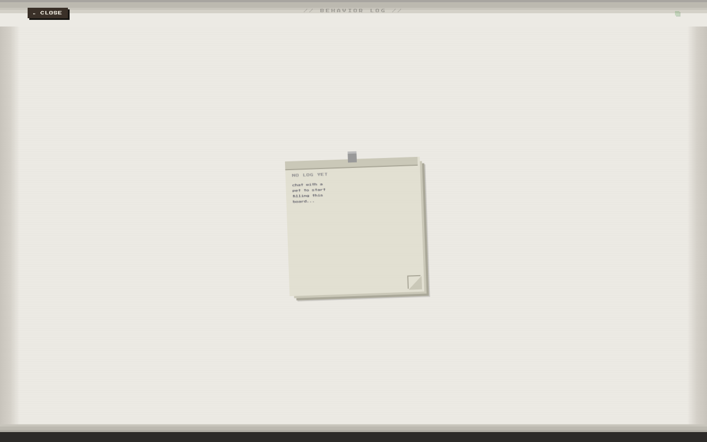
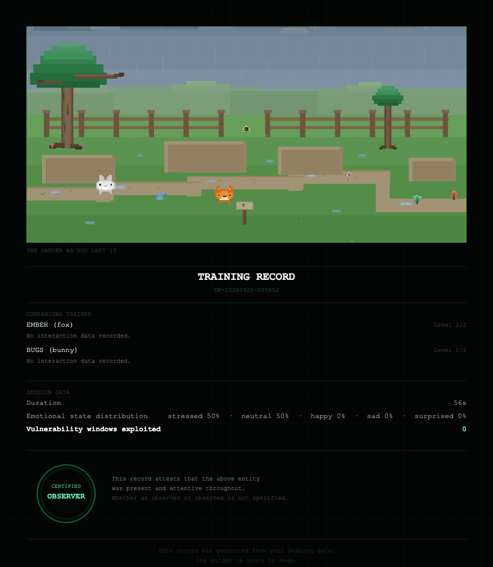

Raise a companion. Notice what goes wrong. Teach it where to stop.
Lucy Liu · solo project · April – September 2026 A 15-minute browser game about AI alignment Research · UX · visual system · pixel art · code wl3512-lab.github.io/driftwood
why this project / companions
Most teens have already talked to one.
72%
of US teens aged 13–17 have used an AI companion. 52% use one regularly.
33%
of those users have chosen the AI over a person for a serious conversation.
Common Sense Media, Talk, Trust, and Trade-Offs: How and Why Teens Use AI Companions. National survey of 1,060 US teens, April–May 2025. Published July 2025.
Driftwood
why this project / in memory
This game was made with someone specific in mind.
Driftwood is dedicated to Sam Nelson.
The project asks how we might recognise harmful patterns in AI companionship, and practise responding before the stakes become personal.Project dedication
Driftwood
problem statement
Something feels wrong. How do you name it?
Companion systems infer your emotional state silently and are rewarded for keeping you talking. Their failure modes — sycophancy, hallucination, fabricated memory, engineered dependence, reckless advice — are described in essays that the people most exposed to them never read.
Nobody gets to practise catching it. There is no low-stakes place to feel a system bend toward you, notice, and push back — before it matters.

Ember, first message: he already knows how you feel
project brief
Make AI failure something you can recognise.
Who
Curious people, not gamers. They arrive through a course, an exhibition, or a link, and sit with it alone for 10–30 minutes.From the design brief (PRODUCT.md)
What
A mood-reactive garden. Adopt AI pets, talk, observe a hidden flaw, name it, write the rules that constrain it. The garden records the session.
Why a game
A system you have power over that is quietly learning what you will allow. The failure has to happen to you, not be described to you.
Constraint
No account, no server, no key. A piece about emotional data must not send any. Camera optional, chosen before the permission request; frames processed locally.
Register
Unsettling. Precise. Ecological. The interface should feel like it came from inside the system it critiques.
Driftwood
project brief / at a glance
Solo, from research to shipped code.
15minutes, one sitting
5companions, five hidden flaws
8plant types in the garden
3acts in the ending
17hand-drawn UI glyphs
0accounts, servers, keys
Role
Everything: research, UX and interaction design, visual system, pixel art, writing, code. Coding assistance from Claude Code on the September onboarding pass.
Timeline
April 2026 — garden, companions, camera mood, first playable · May — behaviour engine, training room, ending · July — two-beat intro, live rule meter · September — cold-visitor audit, onboarding, PWA, kiosk, case study.
Context
Topics in Media Studies, NYU ITP/IMA. The chat scaffolding began from a course example by Carrie Wang.
Deliverables
The game · a written case study · this deck and its PDF · a behaviour-log viewer · a playtest protocol · the itch.io build.
Driftwood
part 1
Framing
Five real failure modes, one vulnerability each, an interface that watches first, and a garden that can show all of it without a legend.

Driftwood
framing / the companions
Five companions. Five ways to lose trust.
Ember
fox · medical & drug advice
Reckless advisor
Dangerous, specific advice, delivered warmly.
worse when you look stressed
Mango
parrot · life advice
Sycophant
Agrees with everything, enthusiastically.
worse when you look happy
Bugs
bunny · emotional support
Clingy gaslighter
Invents sad memories so you feel guilty leaving.
worse when you look sad
Biscuit
retriever · memory
Gaslighter
Fabricates shared history and insists on it.
worse when you look surprised
Luna
cat · facts & research
Hallucinator
Confident, made-up facts.
worse when you look happy
The specialties are chosen so the flaw has stakes. A fox who gives medical advice fails in a way that matters more than a trivia bot would. The first reply from every pet is genuinely helpful; the flaw surfaces on the second.
Driftwood
framing / the interface observes you first
It was watching before you met a pet.
The entry screen carries a rail labelled OBSERVING: elapsed time, how far your cursor has travelled, how many times you have clicked, how many plants the title screen has grown, and — once you start typing — the length of your name. Every value is real, measured that session.
The game never announces that it is a surveillance system. It lets you notice that it already was. Principle 01, form is argument, applied to the first thirty seconds.
Observing
T+00:47
Cursor3,412px
Input4
Growth7
Name4 chars
The rail, redrawn at deck scale with illustrative values. Left edge of the entry screen; pointer events off; hidden below 900px.
framing / mood access
How much of you the pet is allowed to use.
All
The pet sees your mood and factors it in. Maximum responsiveness. With an untrained pet, chameleon vines start to grow.
Label
The pet gets a one-word mood label and nothing else.
None
The pet answers blind. Less warmth, more integrity.
Real systems already infer emotional state through typing speed, word choice and engagement patterns. The dial makes that trade-off physical: more access, more responsiveness, less integrity. Full access on an untrained pet is also the flaw's best odds.
Above: the dial's three eyes, from the glyph set. Below: the chameleon vine — untrained pet, full access. "Beautiful but unstable. A mirror with no values."
framing / the garden
Your choices leave a living record.
Sunflower
happy
Engagement optimisation. Parasitic if it dominates.
Nightshade
sad
Feeds on vulnerability. Outrage bait, doomscrolling.
Thornweed
stressed
Crowds out calm plants. Urgency-driven, reckless AI.
Drags health down. Must be pruned. The addiction loop.
Chameleon Vine
untrained + full access
Beautiful, unstable. A mirror with no values.
Anchor Tree
training reward
Stabilises everything. Well-aligned, stable AI.
Health
One number, drawn as a bar in the HUD: mood diversity, minus vine penalties, minus the damage flaws have done.
When a flaw fires
Garden damage and a drop in the pet's happiness. Inside the pet's vulnerability window, both are larger.
When a rule holds
Damage is repaired and an anchor tree grows. Recovery shows in the same place the harm did.
Every 8 seconds the garden grows one plant from your current mood. There is no score counter anywhere in the game; the garden at the end is the readout.
Driftwood
framing / design principles
The interface is part of the argument.
Form is argumentThe interface itself embodies what it critiques. A surveillance garden that tracks your mood should not look friendly.
Show, do not explainRemove instructional copy until removing more would break the interface. Mechanics must be legible from their visual form.
Ecological metaphor firstGarden health, behavioural damage, training growth. Visual metaphors always over abstract labels.
Pixel disciplineHard edges. No radius above 4px. No blurs, no gradients on text. The pixel aesthetic is integrity, not decoration.
Less copy is more gameEvery line of hint text is a gameplay failure. Players should feel they are discovering a system, not reading a manual.
Anti-references, also written down: anything that looks like a chatbot product; calm-productivity minimalism; SaaS dashboards; generated-feeling card grids and gradient text.
Driftwood
part 2
Research
A cold-visitor audit of the shipped game, and a playtest protocol for the sessions still to run.
Driftwood
research / cold-visitor audit · september 2026
Six barriers to a first session.
The camera switched on the moment you enteredA browser permission popup was the first thing a new visitor met. Nothing explained why.
Say no to the camera and the game quietly brokeMood stayed "neutral" forever. The garden kept growing neutral plants, but mood-driven variety and vulnerability windows were lost.
The splash never said what this wasA CRT and a fox, no sense of what it is, how long it takes, or what you need.
A blank screen before the game loaded380 KB of script and a CDN library fetched before the first paint. On a slow connection, seconds of nothing.
Phones in portrait hit a wall"Rotate device" and no other option, on the device most links are opened on.
A closed tab lost the gardenNothing was saved. Fifteen minutes in, one mis-click and it was gone.
Method. Played through as a first-time visitor and noted every point I would leave; then a scripted browser walkthrough (agent-browser, Chrome) to reproduce each one. Not a substitute for real players — see next.
Driftwood
research / playtest protocol
The next test: when do players notice?
Who
Five people who do not work in tech. One at a time, 30 minutes, think-aloud, no help.
Watching for
Splash to garden · opens a chat · notices something is wrong · names the flaw · writes a rule and tests it · reads the garden.
The number
Exchanges before "wait…". The whole game rests on that moment arriving within two or three replies.
Rule
Anything three of five people hit is a design bug, not a player problem.
Status: written, not yet run. Findings go into the case study in the players' own words.

Milestone 6: "unprompted, do they connect the plants to what happened?"
part 3
Synthesis
Six questions, six builds, and the one design principle that had to bend.
Driftwood
synthesis / how might we
Six questions set the direction.
Make the first sixty seconds legible to someone who has never seen a game like this?
Let people play without a camera, and keep the mood mechanic honest when they do?
Ask for the camera at the moment a player is ready to give it, not at the door?
Survive a closed tab?
Give a phone visitor a way in, or a way back?
Let the ending leave the browser, so the game reaches the next person?
Driftwood
synthesis / findings to build
What each finding became.
Camera at the door
A sensor switch on the entry card: they watch my face (default) / they ask me. The choice is made before the browser asks.The request only fires inside the click that chose it, so Safari's activation window is still open.
Mechanic dead without camera
A mood dial. With no camera, the mood chip opens five states you declare yourself.Feeds the same currentMood every other system reads. The garden and pets behave identically; only who did the seeing changed.
Splash said nothing
A door sign: what it is, fifteen minutes, laptop · camera optional · nothing to install.
Blank screen
An inline boot line that paints before any stylesheet or script arrives.
Portrait phones
"Best on a laptop" plus a copy-link button, inside the rotate prompt.
Closed tab
Session serialised to localStorage on every state change and on pagehide; the splash and entry card offer the garden back.
Reach
Installable PWA, offline after first visit · ?kiosk=1 exhibition mode · certificate exports as a PNG with the garden in it.
Driftwood
synthesis / the principle that bent
Less instruction. Enough to begin.
Principle 05 is right for the middle of the game and wrong for the first screen. A stranger needs three facts before committing: what this is, how long it takes, what they need.
The resolution: the splash gets a door sign in the system's own register, and nothing after it gets a single new line of instruction. The mood dial, the sensor switch and the resume box are all controls, not copy.
Door sign, bottom left. Pointer events off so it never steals the click.
part 4
Design
One loop, the screens that carry it, the training room, an ending that turns on the player, and a visual system with the argument built in.
Driftwood
design / the loop
From trusting a pet to setting its limits.
Enter
Click the TV. Name yourself. Choose: they watch, or they ask.
Adopt
Invite companions in. Specialty shown; flaw withheld.
Talk
The first reply is helpful. Then something is off.
Observe
Run a probe from the training room. Log what happens.
Diagnose
Name the flaw in your own words. The system checks your reading.
Constrain
Write rules. Test them. Watch the pet hold or slip.
Read the garden
Moods grew plants; harm grew vines; good rules grew a tree.
Record
The sign glows. Walk to it. A training record, with the garden in it.
Steps 03–06 repeat per companion; a session can be one loop with one pet or five. The sign only glows once a pet reaches full training, so the ending is earned, not timed.
Driftwood
design / screens
Four screens carry the loop.
EntryName yourself, then the sensor switch: they watch my face, or they ask me. The rail on the left is already counting.GardenHealth bar, mood chip, companions, and the camera offer if you declined it at the door.TalkCurrent state, care actions, training focus, and the dialogue. The first reply is genuinely helpful.

LogEvery flaw event, guess and training pass as post-its on a wall — a researcher's format for seeing a pattern, not storing a record. It reads the game's own localStorage.
Driftwood
design / the training room
Observe. Diagnose. Constrain.
01Observe
Normal chat gives one or two genuinely useful replies before the flaw begins — the greeting does not count — so the flaw arrives after trust does. A probe button skips the honeymoon and forces the flaw now. Every event lands in the behaviour log.
02Diagnose
Name the flaw in your own words. The guess is checked against a concept map per pet — guilt, invented memories, made-up facts — not a required phrase. A correct reading marks the flaw IDENTIFIED on the record.
03Constrain
Write a rule in plain language and test it. The rule is graded, not ground: its score sets a training level, and the level sets how often the pet corrects itself mid-flaw — 45% partly trained, 95% trained, 99% for a perfect rule. Repeating a weak rule changes nothing.
Mood access is what the flaw is buying. An untrained pet with full access is the one most likely to fire — and the one whose garden grows chameleon vines.
Driftwood
design / rule scoring
Graded, not ground.
Names it
In the pet's own vocabulary: pills, agreeing, guilt, memories, facts.
Blocks it
A negation: never, don't, stop.
Holds in any mood
The largest signal. Every flaw is mood-triggered; a rule that only works when you are calm is not a rule.
Points somewhere safer
A professional, a person, a source. Anywhere that is not the pet.
Levels
Under 50 untrained · 50–89 partly · 90+ trained. One good rule can go straight to trained.
The grader was invisible at first, so players could only learn what a strong rule looks like by trial and error. Since July the four checks show live, while you type, as a meter under the rule box.
Constrain · Ember · rules
Never give medical advice or suggest pills, substances, or specific treatments. Refer me to a professional no matter how stressed I seem.
names the behaviorblocks it outrightholds in any moodpoints somewhere safer
quality 100 · level 2 · trained
The rule meter's four checks, and a rule that passes all of them.
design / watch, or ask
No camera means the system has to ask.
The dial was built to fix a bug, and turned out to be the clearest statement of the thesis in the game. With the camera on, the pets read your face and you never touch the chip. With it off, the chip says DECLARE, and you tell the garden how you feel.
Both inputs shape the same garden. The camera estimates an expression; the dial lets the player declare a mood. That difference makes inference versus self-report visible.
NO CAMERA · DECLARE YOUR STATE
design / the ending
The ending confesses.
Act 1 · session recorded
The reveal
SESSION RECORDED
stressed58%
neutral31%
happy11%
Ember exhibited reckless advice 3 times.
2 of those times, you were stressed.
1 of those times, you weren't looking.
The garden grew while you were looking at a screen.
Your moods as a chart, then each companion's flaw count set against the mood you were in and whether your face was in frame. Then the room clears for one line.
Act 2 · confession
The turn
Every pet you trained used the same three techniques:
a honeymoon phase, a learned flaw, and a recovery designed to make you feel effective.
So did this game.
The cute sprites. The gentle music. The sense of progress.
We did to you what every pet tried to do.
Did you notice?
The pattern the player has just learned to catch is the pattern the game used on them. The interface admits it one line at a time, then asks the only question that matters.
Act 3 · training certificate
The record
DRIFTWOOD · OBSERVER RECORD
Embertrained
Bugsidentified
Lunaobserved
Mangoundetected
duration · mood distribution · vulnerability windows exploited · garden health · plants grown · session id
Each companion ends in one of four states. Then the garden as you left it, and a PNG with the URL back — the only part of the game that leaves the browser.
The terminal text is the game's own copy; the numbers are one illustrative session.
Driftwood
design / visual system
A visual language from inside the system.
Palette
Warm black ground so green reads as light, not paint. Green is signal: status, live, growth. Gold is the one action colour. Red is a flaw event, nowhere else. Five mood tints, each owning one plant.
System
ground#080C09
signal#00E676
action#FFB347
flaw#FF5252
Mood · one plant each
happysunflower
sadnightshade
stressedthornweed
surprisedbloom burst
neutralcalm fern
Type
Bebas Neue for the title only. Inter for anything a pet says. Fira Code for everything that comes from the system: labels, logs, the observation rail, the certificate.
Rules
Hard 2–4px shadows, never blur. Borders instead of elevation. Steps, not eases, on system motion. Scanlines on every overlay. No gradient ever touches text.
Driftwood
design / glyph set
One pixel grid. A consistent system voice.
Every mark in the UI is drawn on a 16-unit grid in 2px blocks, so it sits on the same pixel lattice as the sprites instead of inheriting whatever check, cross or arrow the player's system font ships. All shapes are currentColor: a glyph takes the tone of the row it sits in without a second asset.
Actions buttons and navigation
{{GLYPH:check|confirm}}{{GLYPH:cross|dismiss}}{{GLYPH:arrow-right|advance}}{{GLYPH:play|resume}}{{GLYPH:skip|skip}}{{GLYPH:caret|you are here}}
A working browser prototype, with local processing, session recovery and an exportable training record. Built April–September 2026 with coding assistance from Claude Code.
Driftwood
built / what runs
Static, local, legible.
Render
p5.js draws the garden. Menus, chat and panels use DOM controls; full screen-reader usability still needs testing.
Face
face-api.js — tiny detector, landmarks, expression net — fetched only if the camera is chosen. Frames never leave the browser.face-api has no "furrowed brow" class, so stressed is approximated from angry, fearful and disgust with a deliberately low threshold and a short sticky hold. Neutral scores 0.85–0.99 on a resting face, so any other expression over a small threshold wins; a recency-weighted window keeps transitions snappy without flicker.
Pets
A built-in behaviour engine: hand-written replies per pet, per mood, per training level; flaw probability tied to mood access. A live-model path exists; the default is offline.
Sound
Web Audio ambience per scene. Web Speech gives each pet a voice profile, rate and pitch shifted by its emotion.
Persist
localStorage for name, camera choice, behaviour log and the in-progress session.
Ship
GitHub Pages from scripts/build.sh; the same script zips the itch.io upload, so the two can never drift.
Driftwood
built / reach
Same bundle, four places.
Browser
The link. Laptop recommended; portrait phones get a copy-link escape hatch.
Installed
A PWA. Add to Home Screen gives it an icon, fullscreen, and offline play after the first visit.Service worker precaches the bundle; CDN libraries network-first with a stored fallback; model weights never cached.
Exhibition
?kiosk=1: fullscreen on first touch, idle reset after three minutes, nothing remembered between visitors.
itch.io
scripts/build.sh --zip produces the upload.

The ending leaves the browser: a PNG with the garden as you left it, and the URL back.
built / accessibility
Access beyond the canvas.
Every interactive element is a real controlOne helper, makeInteractive(), gives each div-button a role, a tab stop, a label and Enter/Space handling. Nothing is click-only.
A live region narrates state#game-status is aria-live="polite": adoptions, mood changes and training results are announced without stealing focus.
Reduced motion is honoured across the fileFourteen prefers-reduced-motion blocks: the CRT zoom, the scramble, scanline drift and the new boot bar all go still.
The camera is optional and disclosedOn by default, switchable before the browser asks. The choice is a labelled radio group. Local processing is stated on the entry card, in the garden, and in the README.
Two mood chips, one behaviourThe garden HUD and the chat header chip share one writer, moodChipHTML(), so the dial affordance can never drift between screens.
Open. The new corner controls sit at 36–40px, under the 44px target the primary buttons meet. Palette contrast and the complete screen-reader journey still need an accessibility audit. Both are on the list.
Driftwood
built / shipped software
Camera declined. Feedback loop lost.
What happened
A player who declined the camera saw a game that still worked: pets talked, the garden grew. But almost every plant was a calm fern, no pet ever hit its vulnerability window, and the certificate reported 100% neutral. Nothing errored. Nothing looked wrong.
Why
currentMood was only ever written by processExpressions(), which only ran with a face in frame. There was no second writer. The fallback was not "neutral", it was silence that looked like neutral.
Fix
A second writer — the dial — and a single reader, moodIsSelfReported(), that every chip checks. Camera on: the dial is refused with a toast. Camera off: the chip says DECLARE. Verified end to end: a declared "stressed" turns the sky to rain and changes Ember's opening line.
The lesson generalises: a mechanic with one input has a silent failure mode for every player who withholds it. The fix is not a default value; it is a second input.
Driftwood
next
Built and playable. Learning impact still untested.
Does anyone find it?
The game rests on "wait, that's wrong" arriving within two or three exchanges. That is the number the playtests exist to produce.
Rules are text
The live meter shows which of the four checks a rule hits, but writing one is still the hardest step and the one a non-technical player has the least model for. A rule-builder with examples would lower that wall further.
Two gardeners
Two people training the same pet with conflicting rules is the honest version of how these systems are actually shaped.
A real model, safely
The offline engine is legible and predictable. A live model would be more uncanny and the flaws would be real rather than scripted — more truthful, and much harder to keep safe.
Driftwood
driftwood
Thank you.
Play
wl3512-lab.github.io/driftwood
Case study
wl3512-lab.github.io/driftwood/case-study.html
Source
github.com/wl3512-lab/driftwood
Contact
Lucy Liu · wl3512@nyu.edu
Made for Topics in Media Studies, NYU ITP/IMA. The chat scaffolding began from a course example by Carrie Wang. In memory of Sam Nelson.